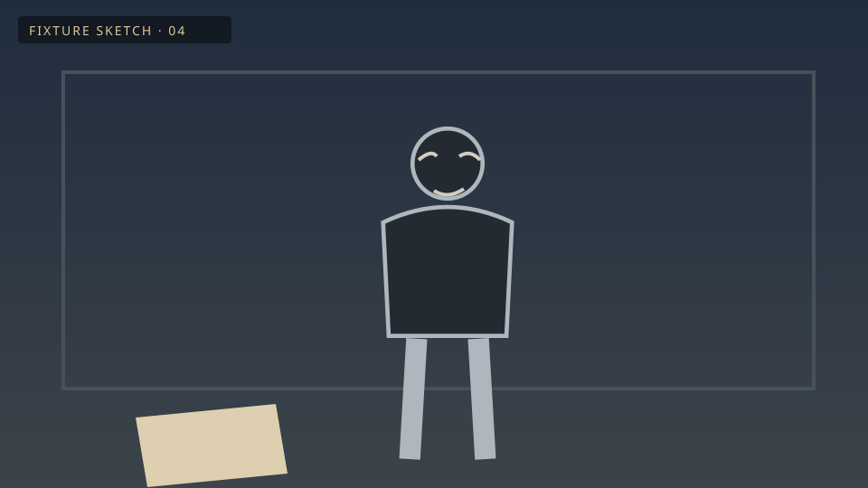

Moment 4 of 8
Ivo notices the letter
Purpose:

Selected artwork · fixed fixture3-second hold · no audio
Why this layout and what remains to build
- The writer can read scene text without leaving the selected moment.
- The director sees purpose, artwork, duration, and note together at desktop size.
- The producer can review one affected moment and a clear change summary.
- A draft keeps its target when the user inspects another scene. Use Return to note target to recover context.
- Outline, Story Wall, AV Script, and source review remain useful optional lenses. This study does not replace them.
Human or external agent→Existing project service→Canonical project→Review and playback
Save/open, real candidates, generation approval, and a supported agent handoff require their implementation slices. This is a layout proposal.